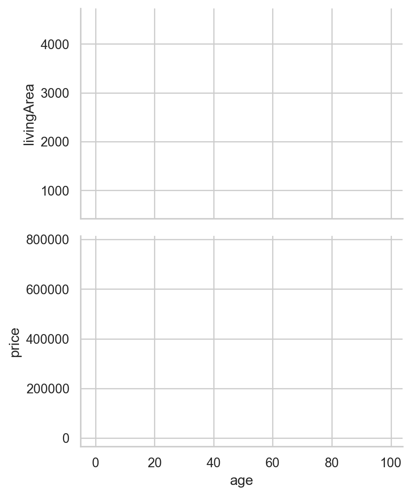
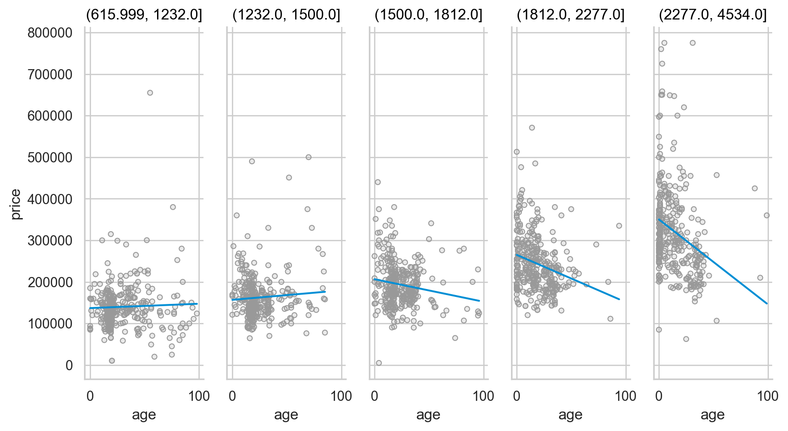
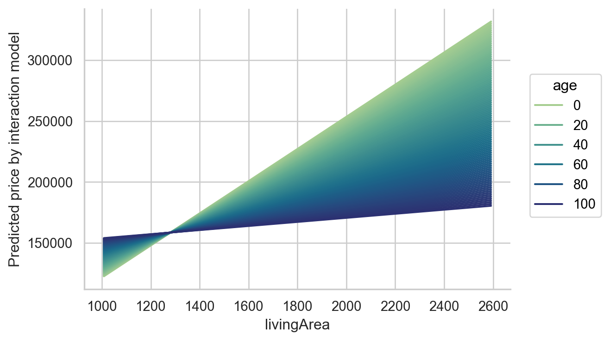
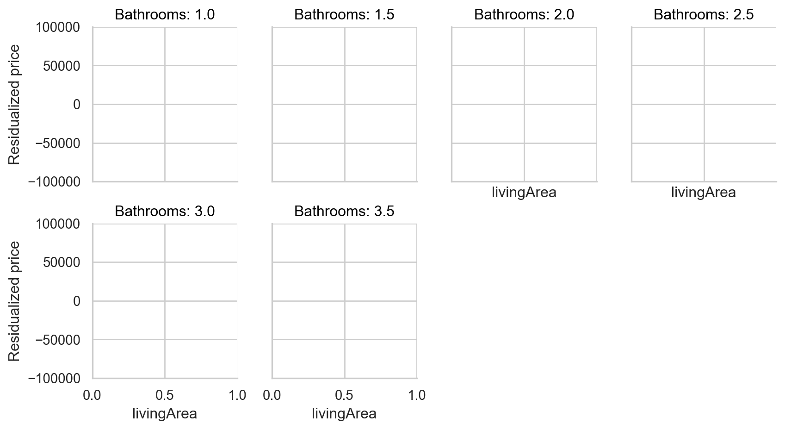
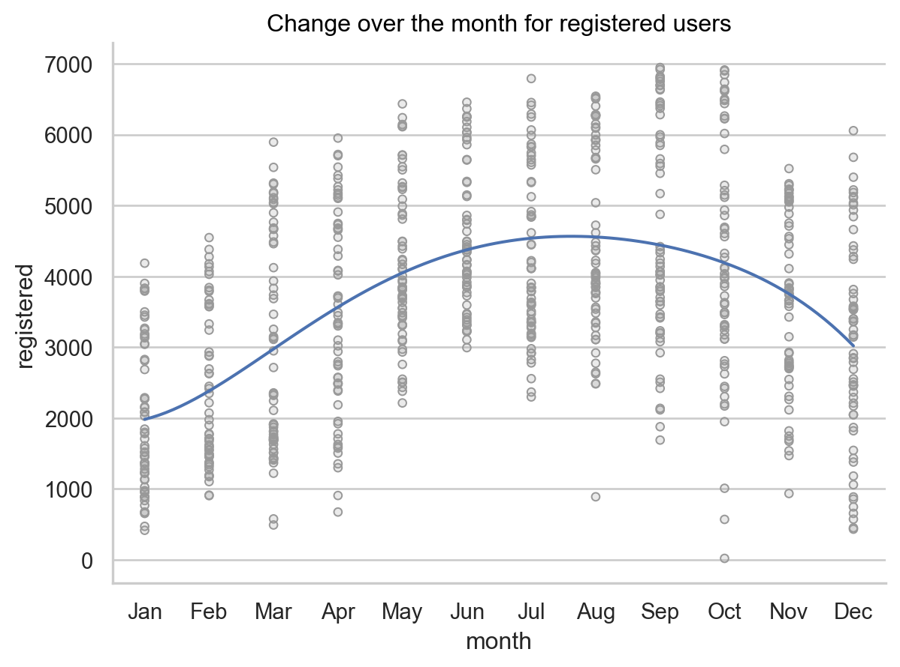
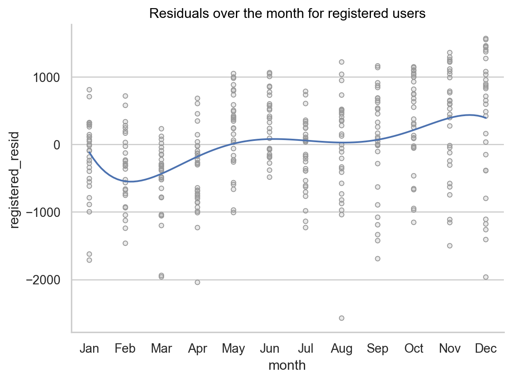
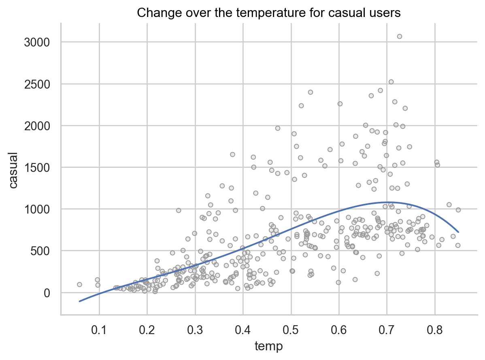
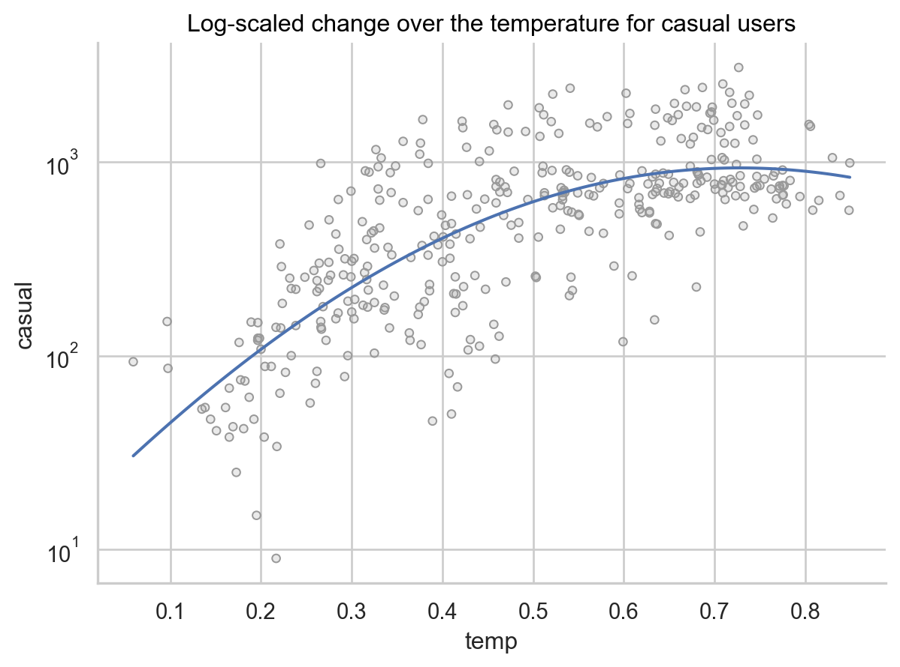

# numerical calculation & data framesimport numpy as npimport pandas as pd# visualizationimport matplotlib.pyplot as pltimport seaborn as snsimport seaborn.objects as so# statisticsimport statsmodels.api as smimport statsmodels.formula.api as smf# pandas optionspd.options.display.float_format ='{:.2f}'.format# pd.reset_option('display.float_format')pd.options.display.max_rows =7pd.set_option("mode.copy_on_write", True) # pandas 2.0.0
총점 250
A. 다음은 Houses in Saratoga County (2006) SaratogaHouses를 이용한 질문들입니다.
houses = sm.datasets.get_rdataset("SaratogaHouses", "mosaicData").data# 변수 설명# print(sm.datasets.get_rdataset("SaratogaHouses", "mosaicData").__doc__)
A-1. 우선, 데이터셋 houses에서 (5)
집의 연령(age)은 100년(포함) 이하이고,
욕실의 개수(bathrooms)는 1개인 이상(포함), 4개 미만(미포함)인 것으로 필터링하여, 이후 계속 사용합니다.
A-2. 집값(price)에 가장 크게 영향을 주는 것은 거주공간의 넓이(livingArea)인 것으로 보이는데, (20)
이를 scatterplot과 fitted line을 이용해, 그 관계가 대략 선형임을 확인할 수 있는 시각화를 하고,
거주공간의 넓이(livingArea)로 집값(price)을 예측하는 선형모형을 세우고,
거주공간의 넓이가 100 (square feet) 증가할 때마다 집값($)이 얼마나 증가하는지 기술하고,
거주공간의 넓이가 집값 변량의 몇 %를 설명해주는지 기술해보세요.
집의 연령과 집값의 관계
오래된 집일수록 가격이 낮아지는 현상이 있는데, 이는 집이 낡아서라기보다는 오래된 집들의 거주공간이 작은 경향이 있어, 간접적으로 집값이 낮아보이는 것일 수 있음을 살펴보고자 합니다.
다시 말하면, 거주공간의 넓이를 고려한 후 (혹은 거주공간의 넓이와는 독립적인) 집의 연령과 집값의 관계를 살펴봅니다.
(오른쪽 도식을 참고하세요. )
A-3. 우선, 집의 연령(age)에 따른 집값(price)의 변화를 살펴보는데, (10)
scatterplot과 fitted line 들을 이용해 그 관계를 파악하고,
대략적인 경향성을 기술하고, 선형관계로 모형을 만드는 것이 적절한지 기술해보세요.
A-4. 이번에는 오래된 집일수록 거주공간도 작다는 것을 확인하는데,
아래와 같이 집의 연령(age)에 따른 거주공간의 넓이(livingArea)와 집값(price)의 변화를 나란히 비교하도록 플랏을 그려보세요. (20)
.pair(y=['livingArea', 'price'])을 이용하고,
관계를 파악할 수 있도록 scatterplot과 fitted line 들을 추가하고,
.layout(size=())를 이용하여, 플랏을 크기를 적절히 조정하세요.
이 플랏을 보고, 오래된 집의 가격이 낮아지는 현상에 대한 가능한 설명을 기술해보세요.

A-5. 구체적인 선형모형을 세워 위 가설을 검증해보는데, 아래 세 모형에 대한 파라미터를 확인해보고, 파라미터의 변화를 기술하여 거주공간의 넓이(livingArea)를 고려하면 집의 연령(age)이 집값에 미치는 영향이 어떠할지 다음에 따라 알아봅니다. (20)
mod1 = smf.ols('price ~ livingArea', data = houses).fit()mod2 = smf.ols('price ~ age', data = houses).fit()mod3 = smf.ols('price ~ livingArea + age', data = houses).fit()
집의 연령이 1년 늘때 집값이 떨어지는 정도가 mod2와 비교해서 mod3에서 추정할 때, 어떻게 바뀌는지 기술해보세요.
반면, 거주공간의 넓이가 1(square feet) 늘때 집값이 올라가는 정도가 mod1와 비교해서 mod3에서 추정할 때 어떻게 바뀌는지 기술해보세요.
왜 이런 변화가 생겼을지 앞서 알아본 (A-1) ~ (A-4)의 내용과 옆 도식을 참고해서 간단히 설명해보세요.
A-6. 다른 한편으로는 오래된 집의 집값이 떨어지는 것처럼 보이는 것은, 큰 집들 혹은 비싼 집들에서 심하게 나타나는 현상일 수도 있음을 살펴보고자 합니다. 다시 말하면, 작은 집들의 경우 오래되었다고 집값이 떨어지지 않을 수 있습니다. (15)
우선, 거주공간의 넓이(livingArea)를 5개의 구간으로 나누어, 각 구간별로 집의 연령(age)에 따른 집값(price)의 변화를 scatterplot과 fitted line을 이용해 다음과 같이 확인합니다.
pd.qcut()을 이용하고,
facet으로 이용하여, 거주공간의 넓이를 구간별로 나누고,
fitted line은 1차 선형함수로 그립니다.

A-7. 위의 현상을 모형에 포함시키기 위해서는, 다음과 같이 상호작용(interaction)을 모형에 포함시켜야 합니다.
smf.ols('price ~ livingArea * age', data = houses)
또는 smf.ols('price ~ livingArea + age + livingArea:age', data = houses)
이 모형을 세우고, 두 예측변수의 다음 값들에 대한 grid을 만들어, 모형의 예측값을 아래와 같이 시각화해 보고, (디테일은 무시)
오래된 집일수록 집값이 낮아보였던 처음의 관찰에 대해 어떻게 해석할 수 있을지 간략히 설명해보세요. (20)
아래와 같이 livingArea와 age의 위치를 바꿔 시각화해보고,
거주공간이 넓어질수록 가격이 높아지는 경향이 집의 연식에 따라 어떻게 달라질 수 있는지 간략히 기술해보세요. (5)

A-8. (A-7)에서 집값(price)을 거주공간의 넓이(livingArea)와 집의 연령(age)으로 예측하는 모형을 세웠는데, 이 두 변수로 설명되지 않는 집값의 변량을 욕실의 수(bathrooms)가 얼마나, 어떻게 추가로 설명할 수 있을지 살펴보고자 합니다. (20)
우선, (A-7)의 모형으로 설명되지 않는 집값(price)의 변량, 즉 residualized된 집값을 resid라는 변수로 추가하고,
다음과 같이, 거주공간의 넓이(livingArea)와 redualized된 집값(resid)의 관계를 욕실의 수(bathrooms)에 따라 나누어 살펴봅니다. (디테일은 무시)
fitted line은 1차 선형함수로 그립니다.
.limit(y=(-100000, 100000))를 이용하여, 확대해서 봅니다.
욕실의 수가 적을 때를 중심으로 아래 플랏이 암시하는 바를 기술해보세요.
Y축은 거주공간의 넓이(livingArea)가 이미 residualized된 집값(resid)임을 고려하세요.

B. 다음은 Bike Sharing in Washington D.C. Dataset를 이용한 질문들입니다.
그 잔차를 달에 따라 살펴봤을 때(오른편 플랏), 어떤 추론을 할 수 있는지 온도와 달의 관계를 중심으로 기술해보세요. (10)
Code for plotting
left = ( so.Plot(bikes_daily, x="month", y="registered") .add(so.Dots(color=".6")) .add(so.Line(), so.PolyFit(5)) .label(title="Change over the month for registered users"))right = ( so.Plot(bikes_daily, x="month", y="registered_resid") .add(so.Dots(color=".6")) .add(so.Line(), so.PolyFit(5)) .label(title="Residuals over the month for registered users"))


B-3. 수업에서 설명한 바와 같이, casual bikers들에 대해서는 특히나 count 데이터의 특성이 왼편과 같이 잘 나타납니다.
이때, 대여수를 log 스케일로 바꾸면 오른편과 같이 변하는 것을 보았을 때, log 스케일로 바꾸면 어떤 이점이 있는지 대략 설명해보세요. (10)
Code for plotting
left = ( so.Plot(bikes_daily_2011, x='temp', y='casual') .add(so.Dots(color=".6")) .add(so.Line(), so.PolyFit(4)) .label(title="Change over the temperature for casual users"))right = ( so.Plot(bikes_daily_2011, x='temp', y='casual') .add(so.Dots(color=".6")) .add(so.Line(), so.PolyFit(4)) .scale(y="log") # log scale .label(title="Log-scaled change over the temperature for casual users"))


이후부터는 2012년 hourly 데이터셋(bikes)에 대해, 자전거 대여수를 log 변환한 값을 다음과 같이 가공한 후 진행합니다.
bikes = ( bikes.query('year == "2012"') # 2012년 데이터만 사용 .assign( lregistered = np.log2(bikes["registered"] +1), # log2 변환 lcasual = np.log2(bikes["casual"] +1), # log2 변환 ))
B-4. 자전거 대여수가 하루의 시간(hr)에 따라 어떻게 변하는지 rangeplot을 통해 살펴보세요. (10)
이 때, 등록된 사용자들(lregistered)과 비등록사용자들(lcasual)을 따로 살펴보고,